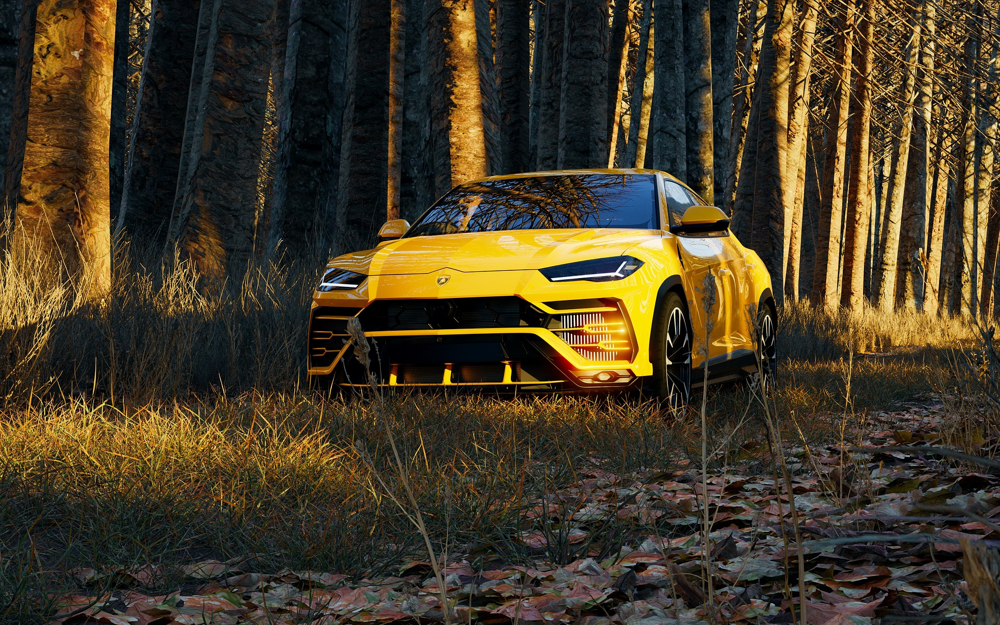

Lamborghini

Jeden z modeli Ferrari nabył Ferruccio Lamborghini, zamożny przedsiębiorca i (początkowo) producent ciągników rolniczych. Ponieważ nie był jednak zadowolony z działania niektórych podzespołów pojazdu, zgłosił się do Enza z propozycją wprowadzenia odpowiednich zmian konstrukcyjnych. Enzo nie wziął pod uwagę sugestii wówczas nieznanego „traktorzysty”. Jaki był efekt?

Ferrucci postanowił udowodnić swoją rację: otworzył własny zakład produkcyjny, zatrudnił najlepszych specjalistów i już rok później zaprezentował światu legendarne Lamborghini 350 GT. Pojawienie się nacierającego byka w logo Lamborghini to zasługa fascynacji walkami byków, a także przyjaźni z ich znanym hodowcą – Don Eduardo Miurą. Swoją drogą Ferruccio urodził się jako zodiakalny byk, tak więc pomysł na logo firmy nasunął się sam. Sam znaczek, przez cały okres swojej ponad 50-letniej historii, nie ulegał w zasadzie żadnym modyfikacjom.
